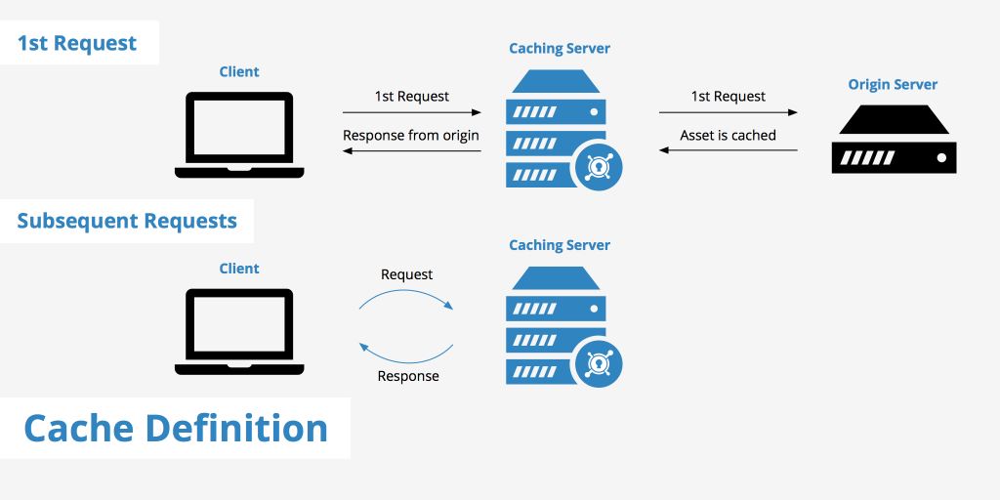
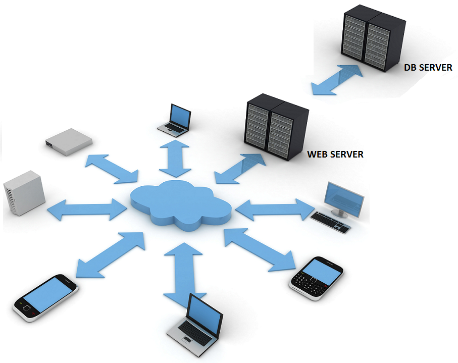
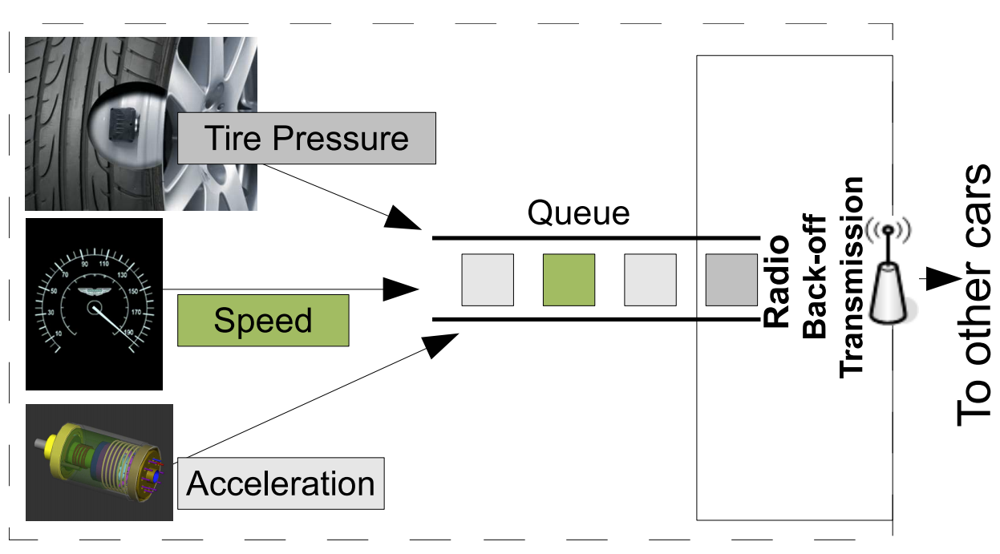

Importance of Context- and Task-Oriented Communication
Emergence of a large number of distributed decision and control systems (e.g., in health care, transportation, and energy management), combined with increasing demands of traditional communications (e.g., due to multiview videos), create an imminent need for highly improved communication systems. Context- and/or task-oriented communication techniques will bring the desired breakthrough. Specifically, context- oriented techniques will greatly improve performance, because future networks have complex infrastructures (with cache-memories, cloud-RANs, etc.) allowing the terminals to collect side-informations about other terminals' data or signals, and because many distributed decision systems rely on numerous devices with correlated measurements. Task-oriented techniques promise even larger gains, especially in distributed decision systems where decisions take value on a small range, and thus the traditional approach of communicating sequences of observed signals results in a huge overhead.
Content-Oriented Communication
New devices such as helper basestations, caches (storage entities), or relaydrones, signifcantly improve performances of communication networks even when employed with standard coding techniques. To attain the desired future performances, however, new communication techniques need to be put in place that are perfectly tailored to the new communication scenarios. These new scenarios differ from previous ones mainly with respect to the terminals' contexts. For example, caches will contain lots of relevant a priori information about desired data; and helper basestations can either provide a second observation or complementary information about a transmit or receive signal. Contexts will also play a crucial role in communication scenarios related to the numerous newly emerging systems that aim to distributively make a decision or distributively take a control action.
Cache-aided system

A large part of our internet consumption concerns only few popular videos and newspapers that can well be predicted in function of the geographical area and the time of the day. Putting in place a system of area-wide distributed caches where popular contents can be pre-stored, is one of the key ideas that will allow to satisfy future demands in rates, delays, and energy consumption. This holds in particular for applications like video delivery
and ground-to-train communications. In fact, in video delivery, popular videos can be pre-stored in caches close to the end users at night when the network is little congested. In ground-to-trains communication in particular to subway trains--content can be pre-stored in caches at the trains' helper basestations during periods of good connections, e.g., when the subway runs overground or stops at a station.
The idea of introducing caches to improve existing communications is relatively new []-[]. These previous results however assume unlimited communication ressources in the placement phase and use standard coding techniques for the delivery phase. Our recent piggyback coding [] proved that in some one-to-many broadcast networks with caches, context-oriented coding techniques for the delivery phase can provide important performance gains, e.g., it can allow to reduce cache memories by 40% without loss in performance.
Optical wireless/visible light communication

Optical wireless communication is a form of communication in which visible, infrared, or ultraviolet light is transmitted in free space (air or vacuum) to carry a message to its destination. Recent works suggest that it is a promising solution to replacing some of the existing radio-frequency
(RF) wireless communication systems in order to prevent future rate bottlenecks [1]-[3]. Particularly attractive are simple intensity-modulation-direct-detection (IM-DD) systems. In such a system, the transmitter modulates the intensity of optical signals coming from light emitting diodes (LEDs) or laser diodes (LDs), and the receiver measures incoming optical intensities by means of photodetectors. The electrical output
signals of the photodetectors are essentially proportional to the incoming optical intensities, but are corrupted by thermal noise of the photodetectors, relative-intensity noise of random intensity fluctuations inherent to low-cost LEDs and LDs, and shot noise caused by ambient light. In a first approximation, noise coming from these sources is usually modeled as being additive Gaussian and independent of the transmitted light signal.
Our recent works []-[] focus on the multiple-input and multiple-input (MIMO) channel. The system is under different assumptions on the channel state information (CSI). Our main results include several upper and lower bounds on the capacity; high-SNR asymptotic capacity for all parameter ranges and low-SNR capacity slope in terms of a maximum variance.
Mixed-Delay Traffic

Modern wireless networks have to accommodate a heterogeneous traffic composed of delay-sensitive and delay-tolerant data. For example, communication for remote surgery or other realtime control applications have much more stringent delay constraints than communication of standard data. Such mixed delay constraints in wireless networks have recently been studied in References []-[]. [] proposes a broadcasting approach over a single-antenna fading channel to communicate a stream of "fast" messages and a stream of "slow" messages. A similar approach was taken in [] but for a broadcast scenario with K users. this latter work proposes a scheduling approach to give preference to the communication of "fast" messages. A scheduling algorithm that prioritizes "fast" messages over "slow" messages was also proposed in []. [] focus on cloud radio access networks (C-RAN). We focus on the pairs of Multiplexing Gains (MG), also called degree of freedom or capacity prelog, that are simultaneously achievable for the "fast" and "slow" messages. Our recent works []-[] determine the set of all achievable delay-sensitive and delay-tolerant MG pairs, that is, the optimal MG region, in the function of the prelogs of the cooperation links and the total number of cooperation rounds allowed for "slow" messages. A new coding shceme is proposed to achieve the described performance.
Task-Oriented Communication
Communication scenarios of many new applications differ from previous ones not only in their context, but also in their fieldsetnal task. This final task is no more to reconstruct data or source sequences observed at various devices, but can be any complicated function of these observations and the devices' contexts.
Hypothesis Testing/Decision System

Important future applications require taking a decision based on distributed observations. For example, in healthmonitoring systems, alarm entities and medical devices such as insuline pumps or drug dispensers, need to detect anomalies in a patient's health based on the measurements reported from the various sensors in and on the patient's body. Large buildings and sensitive infrastructure will have alarm and locking systems that automatically detect burglaries, fire, and other hazardous incidents based on the data they receive from cameras and various sensors, so as to raise an alarm, indicate escape ways, and shut down dangerous areas.
In these applications, communication between the various nodes and the decision center has to be contextand task-oriented, because: 1) the sequences of observations at the various devices are dependent, which provides the various devices with a priori side-information about other devices' observations; and 2) the final task is not to reconstruct long sequences of observations, but to make a decision that takes value on a much smaller range.
We focus on binary hypothesis testing problems and on the problem of maximizing the exponential-decay rate of the probability of missed detection when the exponential-decay rate of the probability of false alarm is fixed. This largest missed-detection error-exponent has been derived for simple, mostly non-interactive, scenarios []-[] under different assumptions on the number of communicated bits. (For first results on small interactive networks, see []-[]). Information-theoretic tools, such as distributed compression techniques (a special case of joint-source channel coding) or the methods of types [, ], are key components of these optimal coding techniques when the communication is of positive rate or when only a single bit can be communicated.
Distributed Computing

Different distributed computing architectures (e.g., MapReduce [] or master-worker) have been proposed to distribute heavy computation tasks, e.g., to run machine learning algorithms. In all these architectures data has to be distributed across nodes, which then communicate partial results about the desired computations. Depending on the specific application, this communication should not reveal information about the nodes' data or their performed computations. In some cases, systems also have to cope with nodes that straggle to return their computations or intentionally return wrong results. In a wireless environment with non-accredited devices these security requirements are even more pronounced.
Recently, Li et al. [] proposed a so-called coded distributed computing (CDC) that stores files multiple times across different nodes in the map phase so as to create multicast opportunities for the shuffle phase. This approach can significantly reduce the communication load over traditional uncoded schemes, and was proved in [] to have the smallest communication load among all coded computing schemes with the same total storage requirements. Various works on distributed computing have addressed above security constraints, however all assuming that communication takes place over noise- and error-free links. For example, []-[] have considered the mitigation of so called stragglers, i.e., nodes that do not return their computation results in time. Malicious users (also called byzantine users), which intentionally return wrong computation results were considered in [],[]. Privacy of the nodes' data has been studied, e.g., in [],[]-[]. Privacy of the performed computations is more difficult to attain, and only specific functions have been considered. For example, [] focuses on functions that can be expressed as combinations and concatenations of matrices, and privacy is with respect to the order of the concatenatenations/combinations.
Our recent work constructed a coded computing scheme from a given placement delivery array (PDA) [], and characterized the storage, computation, and communication (SCC) loads of the resulting scheme in terms of the PDA parameters. Distributed computing schemes where communication is over wireless networks have also been studied []-[], however without security constraints. We will focus on: security over noisy channels, universal schemes for general functions and connections to cryptographic multiparty-computation (MPC) protocols.
Age of Information

Real-time status updates can enable a variety of applications. Temperature and humidity updates from a forest can help better predict and control forest fires, energy utilization information can help make a smart-home energy efficient, knowledge of the velocity, acceleration of a car can assist drivers in an intelligent transportation system to make safe maneuvers [].
In the above examples, the goals are to ensure that the agency that monitors fires stays current about conditions in the forest and drivers stay current about status of vehicles in their vicinity, respectively. These examples share a common description: a source generates time-stamped status update messages that are transmitted through a communication system to a monitor. The goal of real-time status updating is to ensure that the status of interest, is as timely as possible at each monitor. The term Age of Information (AoI) is used to describe the freshness of messages [].
We focus on the cache system where the remote server is the source, the dynamic content items are the processes, and the local cache is the monitor, and the goal is to minimizes the AoI of the downloaded copies. Recently, several works have applied AoI metric to updates in a cache. For example, []-[] employ the canonical setting for AoI analysis: one or more sources send status updates about processes to a monitor across a network service facility. in [] each process is associated with an independent updating source that is competing for the service facility.
Our recent works []-[] formulate the optimization problem of minimizing the average AoI under AoI-dependent update durations and propose cache updating strategies that minimizes the average AoI of the downloaded copies. We focus on systems with time-varying and fixed files' popularities.
Coordination of Smart Agents
Important scenarios require that numerous autonomous devices coordinate their actions with each other and with a random state so as to achieve a common goal. For example, cars have to coordinate in autonomous navigation systems, communication terminals have to coordinate in adhoc networks, and household appliances or producers of alternative energies have to coordinate in energy management systems.
To establish the desired coordination, devices need side-information about the random state, and they need to be able to communicate. Available explicit communication links however can be insuffcient, e.g., because: the number of devices is so large that available explicit communication links saturate; the devices are so heterogeneous that there is no common communication protocol; or devices join and leave the network arbitrarily. In these
scenarios, an important role comes to implicit communication, where devices communicate through their own actions and by observing other devices' actions. For example, in energy management systems, appliances can communicate by means of their consumed energy and measurements of other appliances' energy consumptions.
Communication for coordination necessarily needs to be context- and task-oriented, because: 1) the devices have correlated side-information about the system's random state; 2) the final task is not to reconstruct sources but to establish a desired form of coordination between the devices actions' and a random state; and 3) implicit communication needs to be embedded into the devices' actions;
We will focus on information-theoretic empirical coordination
[, , ]
, which describes the limiting joint empirical distribution between the devices' actions and the random state, because it completely determines the expected utilities in insunitely repeated games and allows characterizing sets of infeasible coordinations.
References
- M. A. Maddah-Ali, U. Niesen, "Fundamental limits of caching," IEEE Trans. on Inf. Theory, vol. 60, no. 5, pp. 2856- 2867, May 2014.
- C.-Y. Wang, S. H. Lim, and M. Gastpar, "Information-theoretic caching: sequential coding for computing," submitted to the IEEE Trans. on Inf. Theory. Online: http://arxiv.org/abs/1504.00553v1.
- M. Ji, A. M. Tulino, J. Llorca, and G. Caire, "Order-optimal rate of caching and coded multicasting with random demands," submitted to the IEEE Trans. on Inf. Theory. Online: http://arxiv.org/abs1502.03124.
- W. Huang, S. Wang, L. Ding, F. Yang, and W. Zhang, "The performance analysis of coded cache in wireless fading channel," submitted to GC2015. Online: http://arxiv.org/abs/1504.01452.
- M. Ji, G. Caire, A. Molisch, "Fundamental limits of caching in wireless D2D networks," submitted to IEEE Trans. on Information Theory, May 2014. Online: http://arxiv.org/abs/1405.5336
- M. Wigger and R. Timo, "Joint cache-channel coding over erasure broadcast channels," in Proc. of ISWCS 2015, Bruxelles, Belgium.
- Joseph M. Kahn and John R. Barry, "Wireless infrared communications," Proceedings of the IEEE, vol. 85, no. 2, pp. 265-298, February 199
- Steve Hranilovic, Wireless Optical Communication Systems. New York, NY, USA: Springer Verlag, 200
- Mohammad Ali Khalighi and Murat Uysal, "Survey on free space optical communication: A communication theory perspective," IEEE Communication Surveys & Tutorials, vol. 16, no. 4, pp. 2231-2258, fourth quarter 201
- L. Li, S. M. Moser, L. Wang, and M. Wigger, The MISO free-space optical channel at low and moderate SNR, in Proc. CISS, Princeton (NJ), USA, March 21-23, 2018.
- L. Li, S. M. Moser, L. Wang, and M. Wigger, On the capacity of MIMO optical wireless channels, in Proc. ITW 2018, Guangzhou, China, Nov. 25-29, 2018.
- L. Li, S. M. Moser, L. Wang, and M. Wigger, On the Capacity of Block Fading Optical Wireless Channels, 2019 IEEE Globecom, Waikoloa, USA, Dec. 9-13, 2019.
- S. M. Moser, L. Wang, and M. Wigger, Capacity Results on Multiple-Input Single-Output Wireless Optical Channels,
- L. Li, S. M. Moser, L. Wang, and M. Wigger, On the Capacity of MIMO Optical Wireless Channels, IEEE Trans. on Inf. Theory, vol. 66, no. 9, pp. 5660-5682, Sep. 2020.
- Cohen, K.M.; Steiner, A.; Shamai (Shitz), S. The broadcast approach under mixed delay constraints. In Proceedings of the 2012 IEEE International Symposium on Information Theory Proceedings, Cambridge, MA, USA, 1-6 July 2012; pp. 209-213
- Zhang, R.; Cioffic, J.; Liang, Y.-C. MIMO broadcasting with delay-constrained and no-delay-constrained services. In Proceedings of the IEEE International Conference on Communications, Seoul, Korea, 16-20 May 2005; pp. 783-787
- Zhang, R. Optimal dynamic resource allocation for multi-antenna broadcasting with heterogeneous delay-constrained traffic. IEEE J. Sel. Top. Signal Process. 2008, 2, 243-255
- Kassab, R.; Simeone, O.; Popovski, P. Coexistence of URLLC and eMBB services in the C-RAN uplink: An information-theoretic study. arXiv 2018, arXiv:1804.06593
- H. Nikbakht, M. Wigger, and S. Shamai, Mixed delay constraints at maximum sum-multiplexing gain, in Proc. ITW 2018, Guangzhou, China, Nov. 25-29, 2018.
- H. Nikbakht, M. Wigger, W. Hachem, and S. Shamai, Mixed Delay Constraints on a Fading C-RAN Uplink, IEEE ITW 2019, Visby, Sweden, Aug. 25-28, 2019.
- H. Nikbakth, M. Wigger, and S. Shamai (Shitz), Random User Activity with Mixed Delay Traffic, IEEE ITW 2020, 12-15 April 2021.
- H. Nikbakth, M. Wigger, S. Shamai (Shitz), and J.-M. Gorce, Cooperative Encoding and Decoding of Mixed Delay Traffic under Random-User Activity, submitted to IEEE ITW 2021, 17-21 October 2021.
- H. Nikbakht, M. Wigger, and S. Shamai, Multiplexing Gains under Mixed-Delay Constraints on Wyner's Soft-Handoff Model, Entropy 2020, 22, 182, Feb. 2020
- H. Nikbakth, M. Wigger, and S. Shamai (Shitz), Coordinated Multi Point Transmission and Reception for Mixed-Delay Traffic, extended version of article submitted to IEEE Trans. on Communications, Dec. 2020.
- T. S. Han, "Hypothesis testing with multiterminal data compression," IEEE Trans. Inf. Theory, vol. 33, no. 6, pp. 759-772, 1987.
- R. Ahlswede and I. Csiszar, "Hypothesis testing with communication constraints," IEEE Trans. Inf. Theory, vol. 32, pp. 533-542, July 1986.
- T. S. Han and K. Kobayashi, "Exponential-type error probabilities for multiterminal hypothesis testing," IEEE Trans. Inf. Theory, vol. 35, no. 1, pp. 2-14, Jan. 1989.
- T. S. Han and S. I. Amari, "Statistical inference under multiterminal data compression," IEEE Trans. Inf. Theory, vol. 44, no. 6, pp. 2300-2324, Jun. 1998.
- W. Zhao and L. Lai, "Distributed testing against independence with multiple terminals," in Proc. of Allerton conference 2014, Monticello (IL), USA, pp. 1246-1251, Oct. 2014.
- W. Zhao and L. Lai, "Distributed testing against independence with conferencing encoders," in Proc. of ITW 2015, Jeju Island, Korea, Oct. 2015.
- M. S. Rahman and A. B. Wagner, "The optimality of binning for distributed hypothesis testing," IEEE Trans. Inf. Theory, vol. 58, no. 10, pp. 6282-6303, Oct. 2012.
- Y. Xiang and Y.-H. Kim, "Interactive hypothesis testing against independence," in Proc. ISIT 2013, pp. 2840-2844.
- Y. Xiang and Y.-H. Kim, "Interactive hypothesis testing with communication constraints," in Proc. 50th Ann. Allerton Conf. Commun. Control Comput., Sep. 2012.
- I. Csiszár and J. Körner, "Information Theory," 2nd ed., Aug. 2011.
- S. Salehkalaibar and M. Wigger, "Distributed hypothesis testing over multi-access channels," in 2018 IEEE Global Communications Conference (GLOBECOM), 2018, pp. 1-6.
- S. Li, M. A. Maddah-Ali, Q. Yu, and A. S. Avestimehr, "A fundamental tradeoff between computation and communication in distributed computing," IEEE Trans. Inf. Theory, vol. 64, no. 1, pp. 109-128, Jan. 2018.
- Q. Yan, M. Wigger, S. Yang, and X. Tang, "A fundamental storage-communication tradeoff for distributed computing with straggling nodes," IEEE Transactions on Communications, vol. 68, no. 12, pp. 7311-7327, 2020.
- Q. Yu, M. A. Maddah-Ali, and A. S. Avestimehr, "Straggler mitigation in distributed matrix multiplication: Fundamental limits and optimal coding," in 2018 IEEE International Symposium on Information Theory (ISIT), 2018, pp. 2022-2026.
- N. B. Shah, K. Lee, and K. Ramchandran, "When do redundant requests reduce latency?" IEEE Transactions on Communications, vol. 64, no. 2, pp. 715-722, 2016.
- J. Kakar, S. Ebadifar, and A. Sezgin, "On the apacity and straggler-robustness of distributed secure matrix multiplication," IEEE Access, vol. 7, pp. 45 783-45 799, 2019.
- R. Bitar, M. Wootters, and S. El Rouayheb, "Stochastic gradient coding for straggler mitigation in distributed learning," IEEE Journal on Selected Areas in Information Theory, vol. 1, no. 1, pp. 277-291, 2020.
- Q. Yu, N. Raviv, J. So, and S. Avestimehr, "Lagrange coded computing: Optimal design for resiliency, security and privacy," 06 2018.
- S. R. H. Najarkolaei, M. A. Maddah-Ali, and M. R. Aref, "Coded secure multi-party computation for massive matrices with adversarial nodes," in 2020 Iran Workshop on Communication and Information Theory (IWCIT), 2020, pp. 1-6.
- W.-T. Chang and R. Tandon, "On the upload versus download cost for secure and private matrix multiplication," in 2019 IEEE Information Theory Workshop (ITW). IEEE, 2019, pp. 1-5.
- M. Aliasgari, O. Simeone, and J. Kliewer, "Private and secure distributed matrix multiplication with flexible communication load," IEEE Transactions on Information Forensics and Security, vol. 15, pp. 2722-2734, 2020.
- H. Akbari-Nodehi and M. A. Maddah-Ali, "Secure coded multi-party computation for massive matrix operations," IEEE Transactions on Information Theory, vol. 67, no. 4, pp. 2379-2398, 2021.
- M. Kim and J. Lee, "Private secure coded computation," IEEE Communications Letters, vol. 23, no. 11, pp. 1918-1921, 2019.
- B. Tahmasebi and M. A. Maddah-Ali, "Private function computation," in 2020 IEEE International Symposium on Information Theory (ISIT), 2020, pp. 1118-1123.
- Q. Yan, M. Cheng, X. Tang, and Q. Chen, "On the placement delivery array design for centralized coded caching scheme," IEEE Trans. Inf. Theory, vol. 63, no. 9, pp. 5821-5833, Sep. 2017.
- S. Ha, J. Zhang, O. Simeone, and J. Kang, "Wireless map-reduce distributed computing with full-duplex radios and imperfect csi," in 2019 IEEE 20th International Workshop on Signal Processing Advances in Wireless Communications (SPAWC), July 2019, pp. 1-5.
- K. Yang, Y. Shi, and Z. Ding, "Data shuffling in wireless distributed computing via low-rank optimization," IEEE Transactions on Signal Processing, vol. 67, no. 12, pp. 3087-3099, 2019.
- F. Li, J. Chen, and Z. Wang, "Wireless mapreduce distributed computing," IEEE Transactions on Information Theory, vol. 65, no. 10, pp. 6101-6114, 2019.
- A. Reisizadeh and R. Pedarsani, "Latency analysis of coded computation schemes over wireless networks," in 2017 55th Annual Allerton Conference on Communication, Control, and Computing (Allerton), 2017, pp. 1256-1263.
- P. Papadimitratos, A. La Fortelle, and et al., "Vehicular communication systems: Enabling technologies, applications, and future outlook on intelligent transportation," IEEE Communications Magazine, vol. 47, no. 11, pp. 84-95, Nov. 2009.
- S. Kaul, R. D. Yates, and M. Gruteser. Real-time status: How often should one update? In Proc. INFOCOM, 2012.
- M. Costa, M. Codreanu, and A. Ephremides. On the age of information in status update systems with packet management. IEEE Trans. Info Theory, 62(4):1897-1910, April 2016
- C. Kam, S. Kompella, G. D. Nguyen, and A. Ephremides. Effect of message transmission path diversity on status age. IEEE Trans. Info Theory, 62(3):1360-1374, March 2016.
- R. D. Yates and S. K. Kaul. The age of information: Real-time status updating by multiple sources. CoRR, abs/1608.08622, 2016.
- R. Yates, P. Ciblat, A. Yener, and M. Wigger, Age-Optimal Constrained Cache-Updating, in Proc. ISIT 2017, Aachen, Germany, June 25-30, 2017.
- H. Tang, P. Ciblat, J. Wang, M. Wigger, and R. Yates, Age of Information Aware Cache Updating with File- and Age-Dependent Update Durations, 2020 18th IEEE WiOPT, Jun. 15-19, 2020, Volos, Greece.
- H. Tang, P. Ciblat, J. Wang, M. Wigger, R. Yates, Cache Updating Strategy Minimizing the Age of Information with Time-Varying Files' Popularities, IEEE ITW 2020, 12-15 April 2021.
- G. Kramer and S. A. Savari, "Communicating probability distributions," IEEE Trans. on Inf. Theory, vol 53, no. 2, pp. 518-525, Feb. 2007.
- O. Gossner, P. Hernandez, and A. Neyman, "Optimal use of communication resources," Econometrica, vol. 74, no. 6, pp. 1603-1636, 2006.
- P. H. Cuff, H. H. Permuter, T. Cover, "Coordination capacity," IEEE Trans. Inf. Theory, vol. 56, no. 9, pp. 4181-4206, Sep. 2010.